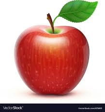
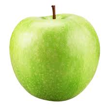
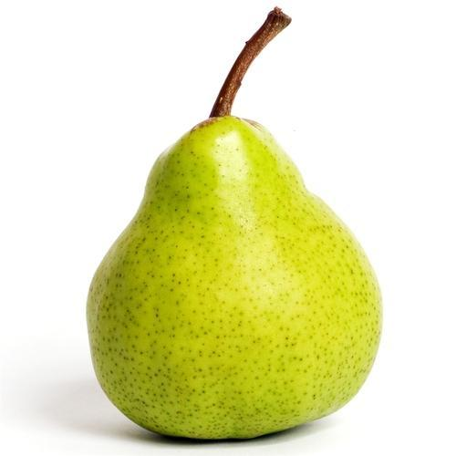

Se denomina fruta a aquellos frutos comestibles obtenidos de plantas cultivadas o silvestres que, por su sabor generalmente dulce-acidulado, su aroma intenso y agradable y sus propiedades nutritivas, suelen consumirse mayormente en su estado fresco, como jugo o como postre (y en menor medida, en otras preparaciones), una vez alcanzada la madurez organoléptica, o luego de ser sometidos a cocción.
Se denomina fruta a aquellos frutos comestibles obtenidos de plantas cultivadas o silvestres que, por su sabor generalmente dulce-acidulado, su aroma intenso y agradable y sus propiedades nutritivas, suelen consumirse mayormente en su estado fresco, como jugo o como postre (y en menor medida, en otras preparaciones), una vez alcanzada la madurez organoléptica, o luego de ser sometidos a cocción.
Se denomina fruta a aquellos frutos comestibles obtenidos de plantas cultivadas o silvestres que, por su sabor generalmente dulce-acidulado, su aroma intenso y agradable y sus propiedades nutritivas, suelen consumirse mayormente en su estado fresco, como jugo o como postre (y en menor medida, en otras preparaciones), una vez alcanzada la madurez organoléptica, o luego de ser sometidos a cocción.
Se denomina fruta a aquellos frutos comestibles obtenidos de plantas cultivadas o silvestres que, por su sabor generalmente dulce-acidulado, su aroma intenso y agradable y sus propiedades nutritivas, suelen consumirse mayormente en su estado fresco, como jugo o como postre (y en menor medida, en otras preparaciones), una vez alcanzada la madurez organoléptica, o luego de ser sometidos a cocción.
HOLA CRISTINA sSe denomina fruta a aquellos frutos comestibles obtenidos de plantas cultivadas o silvestres que, por su sabor generalmente dulce-acidulado, su aroma intenso y agradable y sus propiedades nutritivas, suelen consumirse mayormente en su estado fresco, como jugo o como postre (y en menor medida, en otras preparaciones), una vez alcanzada la madurez organoléptica, o luego de ser sometidos a cocción.
| Nom | Origen | Descripció | Imatge |
|---|---|---|---|
| Poma Fuji | Bellcaire | La millor poma del poble de Bellcaire collida pels propis pagesos |  |
| Poma Golden | Golmés | La millor poma golden del Plà d'Urgell |  |
| Pera llimonera | Alamús | La millor pera del Segrià |  |